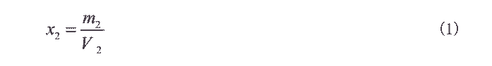
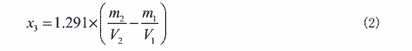
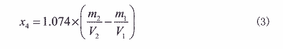
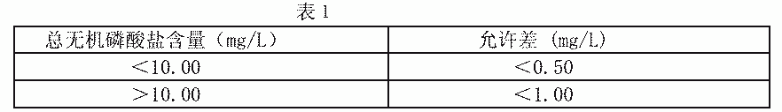

25.总无机磷酸盐含量的测定——钼酸铵分光光度法
本方法适用于含 PO43‐0.02～50mg/L 工业循环冷却水中磷含量的测定。
１．原理
在酸性溶液中，试验溶液在煮沸的情况下，聚磷酸盐水解成正磷酸盐，正磷酸盐与钼
酸铵反应生成黄色的磷钼杂多酸，再用抗坏血酸还原成磷钼蓝，于 710nm 最大吸收长处分
光光度法测定。
反应式同“正磷酸盐含量的测定１。
２．试剂
同正磷酸盐的测定２和下列试剂。
2.2 氢氧化钠，120g/L 溶液:
称取 30g 氢氧化钠,精确到 0.5g,溶于 250mL 水中,摇匀,贮存于塑料瓶中；
2.2 硫酸: １＋３ 溶液；
2.3 硫酸：１＋３５溶液；
2.4 酚酞: １％乙醇溶液。
３．仪器
同正磷酸盐的测定第 3条。
4. 分析步骤
4.1 工作曲线的绘制
同“正磷酸含量的测定”第 4.1 条。
4.2 总无机磷酸盐含量测定
从正磷酸盐测定的试样(4.2)中取 10.00mL 试验溶液于 50mL 容量瓶中，加入 2.0mL 硫
酸溶液(2.2)，用水调整容量瓶中溶液体积至约 25mL，摇匀，置于已煮沸的水浴中 15 分钟，
取出后流水冷却至室温，用滴管向容量瓶中加 1 滴酚酞溶液,然后滴加氢氧化钠溶液至溶液
显微红色，再滴加硫酸溶液（2.3）至红色刚好消失，加入 2.0mL 钼酸铵溶液(见正磷酸盐
测定之 2.4)，3.0mL 抗坏血酸溶液(见正磷酸盐 测定之 2.3)，用水稀释至刻度，摇匀，室
温下放置 10 分钟，在分光光计 710nm 处，用１cm 吸收池，以不加试验溶液的空白调零测
吸光度。
5. 分析结果的计算
以 mg/L 表示的试样中总无机磷酸盐(以 PO43‐计)含量(X2)，按（１）式计算：

式中:m2——从工作曲线上查得的以μg 表示的 PO43量；
V2——移取试验溶液的体积，mL。
5.1 以 mg/L 表示的试样中三聚磷酸钠(Na5P3O10)含量(X3)，按（2）式计算：

式中:1.291——系 PO43 换算为三聚磷酸钠的系数。
5.2 以 mg/L 表示的试样中六偏磷酸钠[(NaPO3)6]含量(X4)式计算，按（3）
式计算：

式中:1.074—— 系 PO43 换算为六偏磷酸钠的系数。
所得结果应表示至二位小数。
６． 允许差
两次平行测定结果之差应符合表１的规定。

取算术平均值为测定结果。